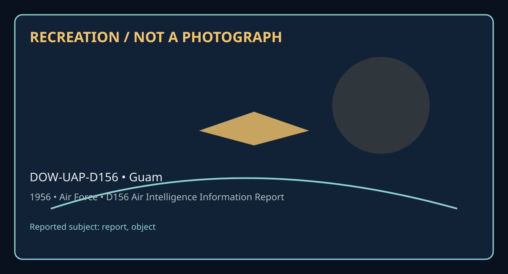

Release 07 / archival case file / DOW-UAP-D156
D156 Air Intelligence Information Report Guam 1956
This d156 air intelligence information report places a report, object thread in a 1956 Guam record.
ID: DOW-UAP-D156
Filename:
DOW-UAP-D156-Air_Intelligence_Information_Report_Guam-1956.pdfDate marker: 1956
Location: Guam
Agency or collection signal: Air Force
Pages read: 5

RECREATION / NOT A PHOTOGRAPH. The diagram is an interpretive editorial aid, not source imagery.
What this document says
The opening page's extracted text begins: “AF FORM 112 APl'>ROVE'.0 I J UN£ 1948 COUNT~Y Japan AIR INTELLIGENCE INFORMATION REPORT SURJECT (u) Unidentified Flying Object Report AREA REPORTED ON I FROM (AD g, nlc11)FEAF _ G::i._arn_, M , I. I TILO DA~ o;:;_R__ T _ __________~ 1 -DA_T_Eo_F_lN_~~o;-M-~= T~-oN--- ~-------~I-EV-A-LU-A-Tl-oN___B-_- - -------• 5 7 5 7 4 ,-P-,- -ARE0 71lY (0c-;;;;,- --~- souRc=------~----------------• R-EP _ _ ..,...,., 'ffi1c~---,),---- ----- ------,1---==-=-='""£ ,--,.-=Cacc'pt"-c-=---,-,A=--la---c---7n_G--.-'_P..,,..o_un~d~, _A_T_I_LO-,--,------..--~---~M_e_s_sa__gea from D/0 7th Air Force (Adv) REFERENCES (Omtrol nw-mbtr, direetille. pr,w,oui r¢1Wrt. rte .. as om,lir,able) AFR 200-2 Unidentified Pl Ob"ect Re orta SUMMARY: ( &>..., c,mciu ,umma,y of r,p r,rt. Oi•• •iu>uft<an,• I•• fmal m e-8/Jllttnt • pa,ag,-aph. LW ;n,lo,mr,. al low,r left. Beq-m led of report °" A F ,Form Jl#-Pa,t 11.) l. This report forwards infonnat ion received by message from Comm1nder, ?th Air Force (Ad need) Guam, l . I., concerning an unidentified aerial blinking li ht observed by an F-86D pilot flying in the Guam radio range ho ding pattern on the night of Jl Dec 56, 2. Furth er investigation determined that a lighted weather balloon had been launched one hour and thirty- eight minutes (1 :,38) prior to the sighting . The balloon was loot from the vie-w of the ground station one hour and ten minutea (1:10) prior to”
Across the 5 pages, the recurring terms are report, object. Those details belong to this file, not to a generic case template. Page-level reading follows:
- Page 1: AF FORM 112 APl'>ROVE'.0 I J UN£ 1948 COUNT~Y Japan AIR INTELLIGENCE INFORMATION REPORT SURJECT (u) Unidentified Flying Object Report AREA REPORTED ON I FROM (AD g, nlc11)FEAF _ G::i._arn_, M , I. I TILO DA~ o;:;_R__ T _ __________~ 1 -DA_T_Eo_F_lN_~~o;-M-~= T~-oN--- ~-------~I-EV-A-LU-A-Tl-oN___B-_- - -------• 5 7 5 7 4 ,-P-,- -ARE0 71lY (0c-;;;;,- --~- sou
- Page 2: Af .~ORM 112-PART II APPROVED I JUNE 1948 AIR INTELLIGENCE INFORMATION REPORT FROM (Ai,t,icg) DI Ft.AF ATILO REl'ORT r«l. IR-7- 57 PAGE 2 OF '-/ PAGl'S 1. t 16102 on 31 Dec 56 an F-Af>D pilot :£lying in the Guam range holding pattern sighted an unidentified blinking white liEtit. Following is a copy of the unclassified message forwarded from Commander, 7th A
- Page 3: AF FORM 112-PART II APPROVED 1 JUNE 1948 AIR INTELLIGENCE INFORMATION REPORT FROM (Agei;c,) DI FEAF ATILO REf'ORT HO. IR-7-57 PAGE OF PAoES 3 4 B. Brunson, Ted, First Lieute ant, 41st Fig)lter-Interceptor Squadron, alert pilot, observ r considered very reliable, no other supporting. P rt?. A. Brok n clouds at approx:imately 3,000 feet. Clrer above. Visibilit
- Page 4: ~F F0R.1:1 111-PART II PROVED 1JUNE 1948 AIR INTELLIGENCE INFORMATION REPORT FROM (Aaencu) REPORT rm. DI FEJ • ATILO IR- 7- 57 4 PAGE OF PAGES CX)LIB? TS OF 'IH PREPAR:m:i OFFICER: 4. The check on the lighted weather ball oon showed that it was launched at 14322 and had ascended to 20, 000 feet at 15002. It as lost fr vie at that t:im . It ' s ascension rate
- Page 5: 11 rnAq_sr r . 1 P ,Bl;C!f 31-lUI. l G.:!""'VOfl<;; OITAMSIO I 3JJA3rJIJJ3TJ/11 SIIA OJITA 'i!A:['>J: ra 0 .:ts .be.dorw.sl e.sw Jl .:tsrlJ beworla nooLLod -rorf.:tsew .be.:t~J:.( en.:t rto :>foerfo srrr .J .emi:.t .tsrl;t j.s welv mo'll .tao.I a.sw j! .s:oo~.r J.s .:tee'l OOOtOS: oj bebne:>e.s bm bLI.B SSt,.1.£ nooil.sd "le!tt.sew 'tlis1InoM .b-x.sbns.t e .
Historical context and disclosure schema
Read in context, this record belongs to the 1956 information environment: Air Force paperwork, a Guam setting, and the reporting conventions visible in the source. Its broader disclosure value is procedural as well as anecdotal: it shows how an observation, material question, investigation, or analytical program was routed, described, and preserved. That makes it comparable to other Release 07 records without collapsing unlike evidence into one event.
Evidence limits
The source establishes that this document exists and records what its authors or quoted witnesses wrote. It does not, by itself, prove the identity, performance, origin, or physical reality of the reported subject. Extraction preserves wording but cannot restore missing attachments, authenticate provenance, or independently validate testimony. Interpretations beyond the page-specific record remain hypotheses.
Source: supplied PDF in research/tranche-07. This article is a research aid, not a claim that the reported object was non-human.